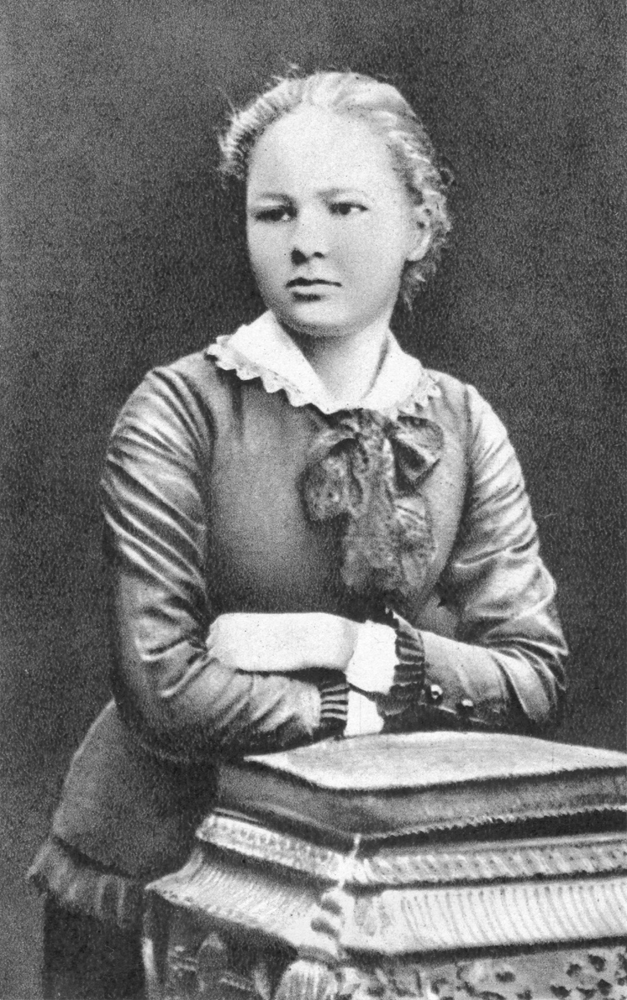

Leonardo Da Vinci

Leonardo da Vinci (1452-1519) fue un artista, arquitecto, ingeniero y científico italiano del Renacimiento.
Es famoso por su habilidad de captar en cualquier material la naturaleza, los fenómenos científicos y las
emociones humanas. Las obras maestras innovadoras de Leonardo muestran su maestría de la luz, de la perspectiva
y del efecto en conjunto. Sus obras más apreciadas son el retrato de Mona Lisa y la pintura mural La última cena.
Comenzar a leer
Marie Curie

Maria Salomea Skłodowska-Curie, conocida como Marie Curie, nació el 7 de noviembre de 1867 en Varsovia,
Polonia. Fue una física, matemática y química pionera en el campo de la radiactividad. Marie no solamente
fue la primera mujer, sino que la primera persona en recibir dos Premios Nobel en distintas especialidades:
Física (1903) y Química (1911), y la primera mujer en hacer clases en la Universidad de París. Marie se casó
con el científico Pierre Curie y fue madre de quien recibiría más adelante también un Premio Nobel en Química,
Irène Joliot-Curie.
Comenzar a leer
Nikola Tesla

Nikola Tesla fue un físico, matemático, ingeniero eléctrico y mecánico, y célebre inventor, un verdadero
visionario muy por delante de sus contemporáneos en el campo del desarrollo científico, que revolucionó la
teoría eléctrica desarrollando las bases para la, generación de corriente alterna (AC). Fue uno de los más
importantes contribuyentes al nacimiento de electricidad comercial y es conocido por sus muchos desarrollos
revolucionarios en el campo del electromagnetismo a finales del siglo XIX y principios del siglo XX.
Comenzar a leer
Neil Armstrong

Neil Armstrong, el primer hombre en pisar la Luna, vivió una vida marcada por su bajo perfil y tragedias
personales. Desde su infancia en Ohio hasta su histórico alunizaje en 1969, Armstrong siempre se mantuvo
lejos de los reflectores, dedicándose a la enseñanza y la investigación.
La muerte de su hija Karen y su decisión de mudarse al campo en la década de 1970 reflejan su carácter
reservado. Su vida, aunque discreta, dejó un legado imborrable tanto en la Tierra como en el espacio.
Comenzar a leer
Felipe II Rey de España

El monarca Felipe II llegó a ser considerado como el más absoluto del mundo. Tuvo que cargar con la
responsabilidad de administrar el mayor imperio conocido. Se ha dicho de él que fue el primer gobernante
que intentó instaurar un auténtico Estado español. Sin embargo, la visión del gobernante entre sus súbditos
era de déspota, despiadado y cruel. De hecho, existe la creencia consolidada entre buena parte de los
historiadores que así lo afirman en la actualidad.
Comenzar a leer
Juan Pablo II

Juan Pablo II de nombre secular Karol Józef Wojtyła fue el papa 264 de la Iglesia católica y
soberano de la Ciudad del Vaticano desde el 16 de octubre de 1978 hasta su muerte en 2005. Fue
canonizado en 2014, durante el pontificado de Francisco. Tras haber sido obispo auxiliar (desde 1958)
y arzobispo de Cracovia (desde 1962), se convirtió en el primer papa polaco de la historia, y en el
primero no italiano desde 1523.
Comenzar a leer